Schritt 1
Anfrage erfassen
Jede Anfrage landet in einer Liste mit Thema, Wunschtermin und Budget. Mit einem Klick wird daraus ein Angebot, der Kunde steht dann gleich in der Kartei.
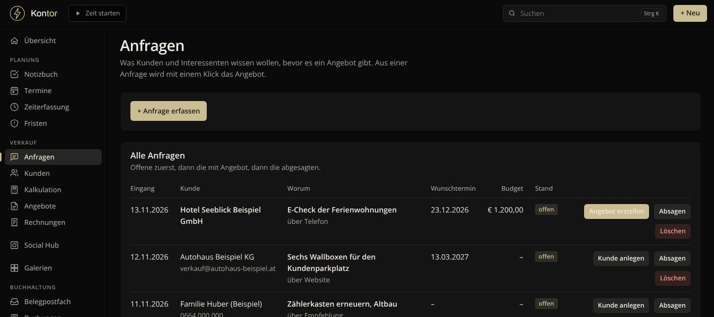
Start › Referenz Kontor
Referenzprojekt · Web-App
Eine Plattform, in der jeder Auftrag den ganzen Weg geht: Anfrage, Angebot, Arbeit, Lieferung, Rechnung und Buchhaltung, dazu die Planung für Social Media. Jeder Schritt kennt den vorigen.

Die Bilder zeigen Kontor mit den Daten eines erfundenen Elektrobetriebs: Firma, Kunden, Leistungen, Preise und Beiträge sind Beispiele.
Ausgangslage
Anfragen per E-Mail und Telefon, Angebote in Word, Rechnungen in einer Vorlage, Buchhaltung in Excel, Pläne und Fotos per Download-Link, Beiträge für Social Media in drei Apps. Dieselben Daten werden mehrfach eingegeben, und niemand sieht auf einen Blick, was offen ist.
Ziel
Die Kundenlogik
Am Beispiel einer Photovoltaikanlage mit zwei Wallboxen für ein Hotel.
Jede Anfrage landet in einer Liste mit Thema, Wunschtermin und Budget. Mit einem Klick wird daraus ein Angebot, der Kunde steht dann gleich in der Kartei.

Leistungen sind mit Kosten und Aufschlägen hinterlegt, Kontor schlägt den Preis vor. Das Angebot entsteht aus dem Leistungskatalog im eigenen Briefpapier und geht als PDF oder Word hinaus.
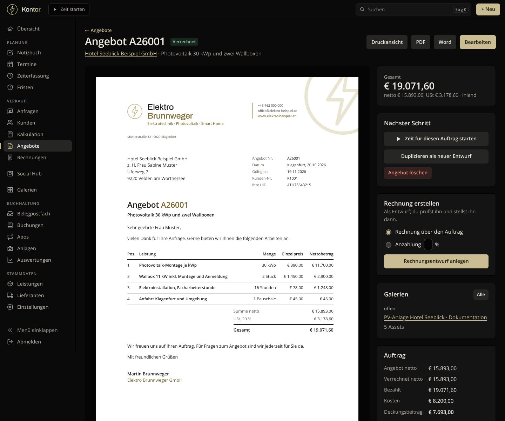
Zeiten laufen mit Start und Stopp je Auftrag. Beim Verrechnen übernimmt Kontor die offenen Stunden als Positionen in die Rechnung.
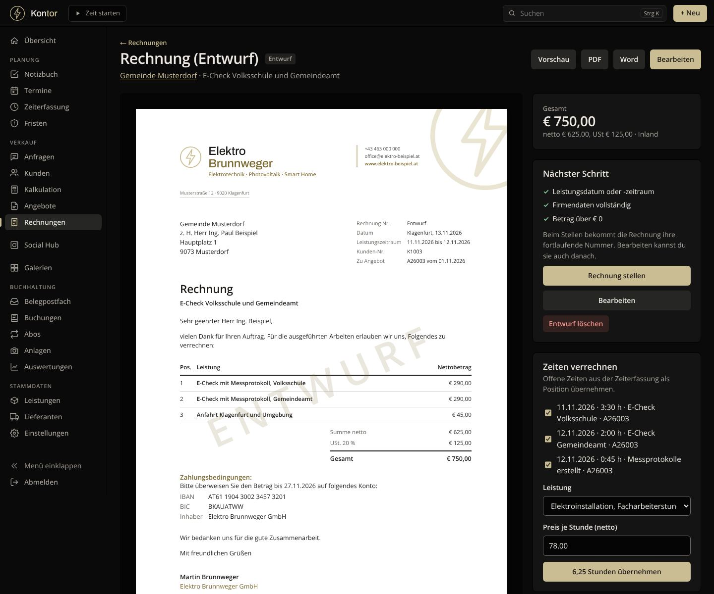
Aus dem angenommenen Angebot wird die Rechnung, ganz oder als Anzahlung. Kontor vergibt die Nummer, erfasst die Zahlung und zeigt, was noch offen ist.
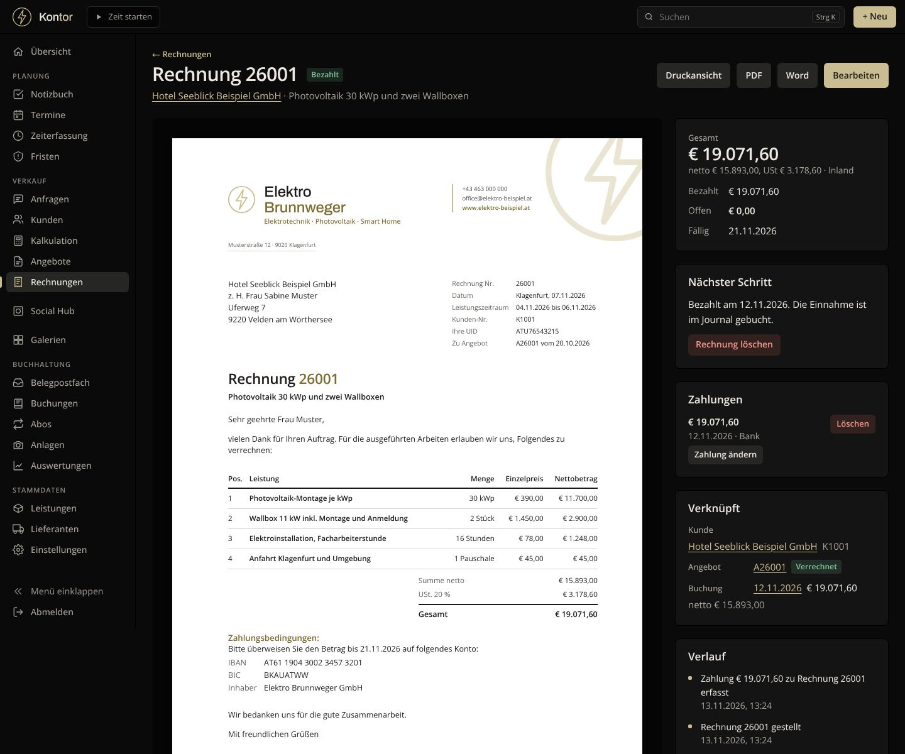
Lieferantenrechnungen kommen als Foto oder per E-Mail ins Belegpostfach. Kontor liest Lieferant, Datum und Betrag und schlägt die Buchung vor; gebucht wird erst nach Bestätigung.
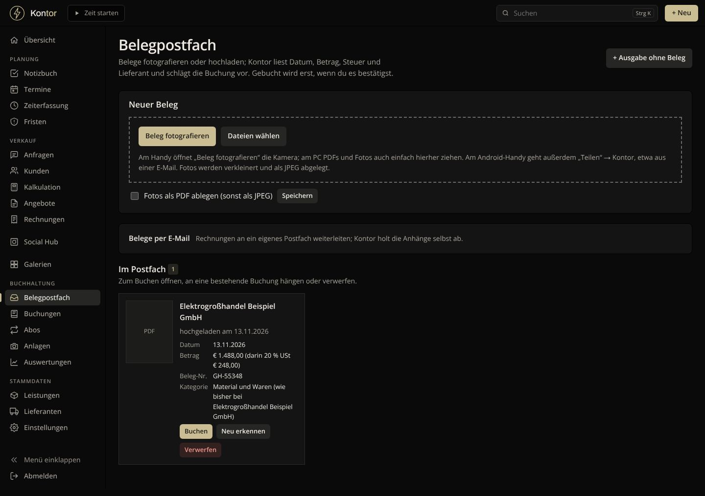
Aus dem Journal entstehen Umsatzsteuervoranmeldung, Beilage E1a und ein Export für die Steuerberatung.
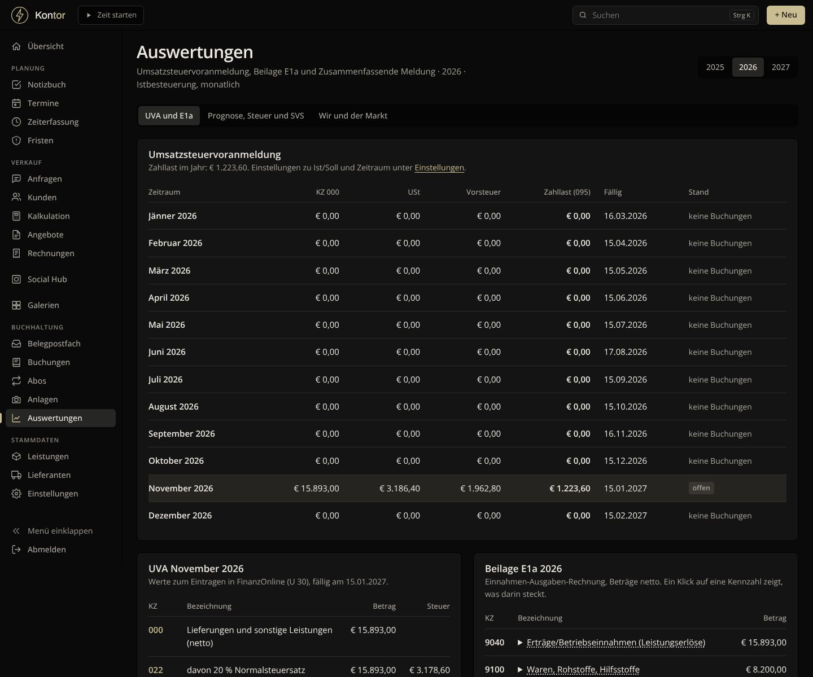
Liefern und abstimmen
Pläne, Messprotokolle und Fotos gehen nicht per Download-Link hinaus, sondern in eine Galerie mit eigenem Link für den Kunden. Dort sieht er alles im Briefkopf des Betriebs, lädt herunter oder gibt Rückmeldung.
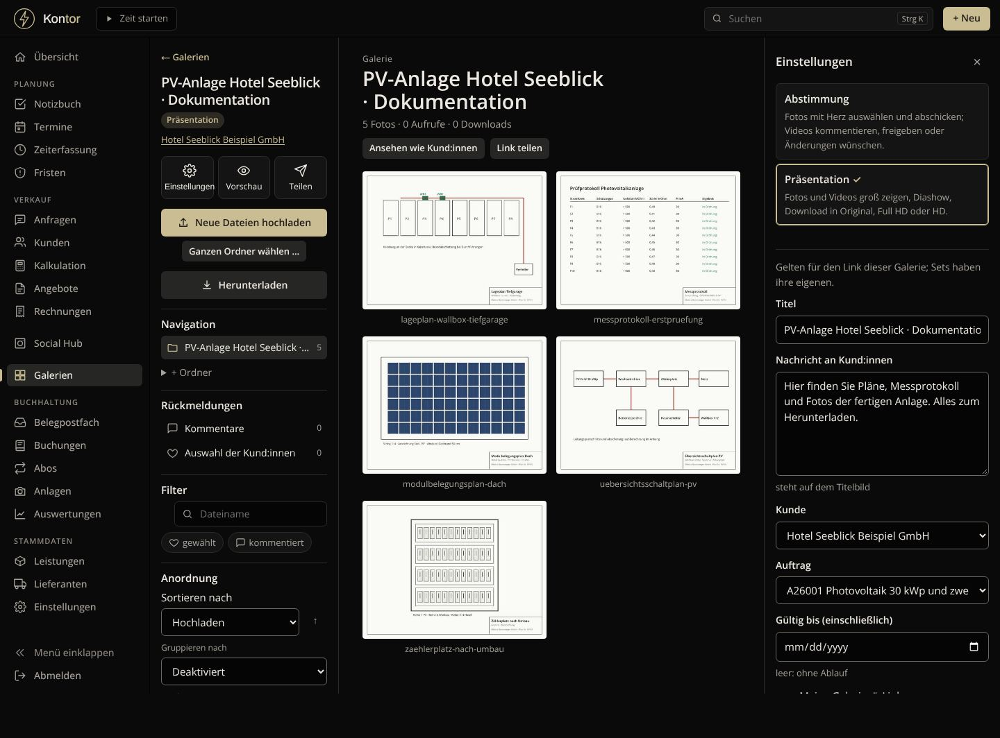
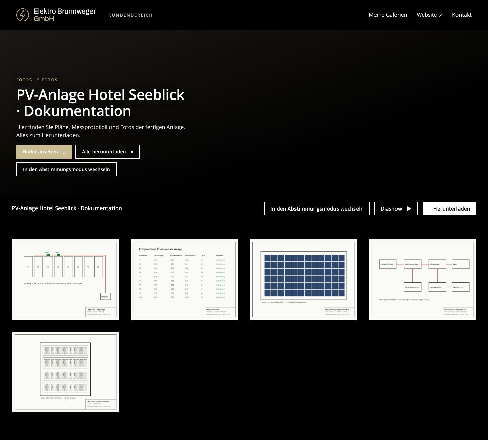
Alles verknüpft
Angebote, Rechnungen, Umsatz, Galerien, Termine und Anfragen eines Kunden an einem Ort.

So entstanden
Den Programmcode von Kontor haben wir zum großen Teil mit KI-Programmierassistenten geschrieben. Wir legen fest, was die App können soll, beschreiben jeden Schritt, prüfen das Ergebnis und testen es; die KI setzt um. Das spart Zeit bei der Umsetzung, und diese Zeit fließt in Planung und Tests.
Was das für Ihren Betrieb heißt
Der Weg hinter Kontor passt auf viele Betriebe: Anfrage, Angebot, Auftrag, Lieferung, Rechnung. Ob Handwerk, Hotel, Agentur oder Dienstleister: Wir bauen die Schritte, die Sie wirklich brauchen, und lassen den Rest weg.
Social Hub
Instagram, Facebook und LinkedIn im selben Werkzeug
Beiträge entstehen dort, wo die Projekte liegen. Fotos kommen aus der eigenen Bibliothek, der Monatsplan zeigt, was geplant, freigegeben und veröffentlicht ist, und Kontor stellt freigegebene Beiträge zur geplanten Zeit online.
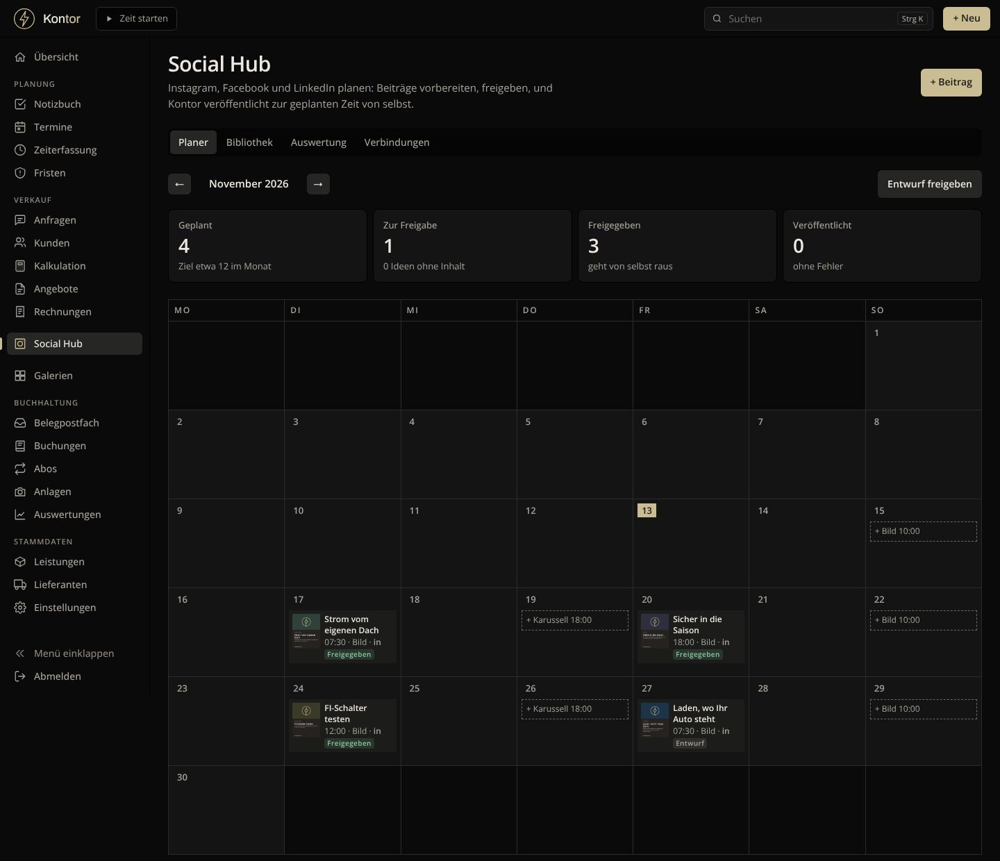
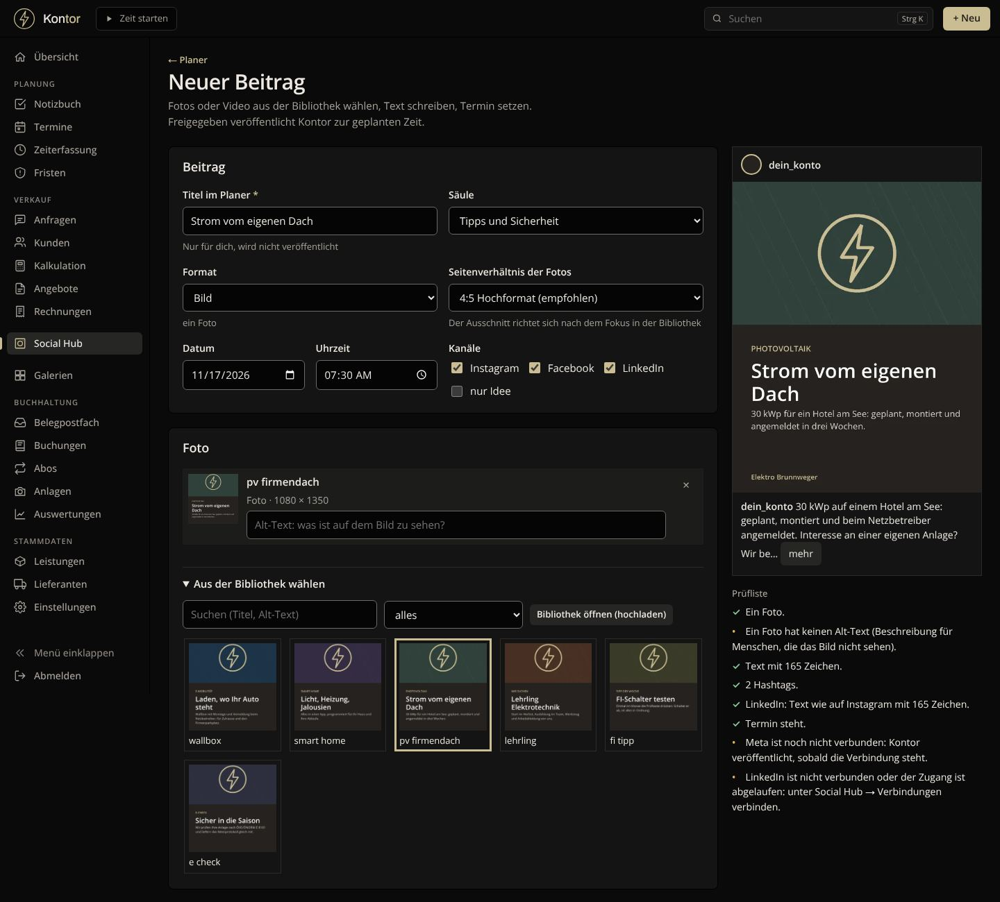
Beitrag schreiben
Foto wählen, Text und Hashtags schreiben, Termin und Kanäle festlegen. Die Vorschau zeigt den Beitrag so, wie er im Feed erscheint, die Prüfliste meldet fehlende Alt-Texte oder zu lange Texte.
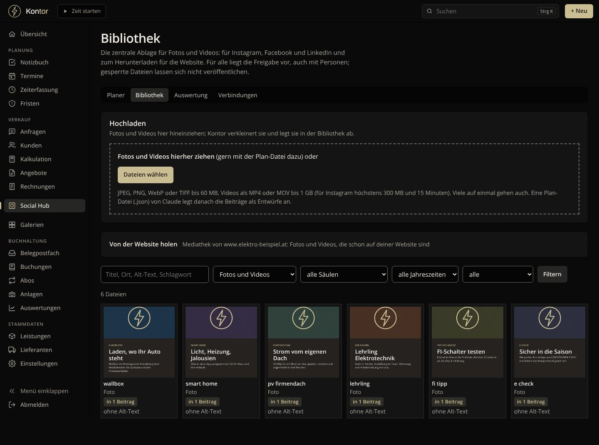
Bibliothek
Alle Fotos und Videos an einem Ort, verkleinert und mit Alt-Text. Man sieht, welches Bild schon in welchem Beitrag verwendet wurde.
Planen nach Säulen
Jeder Beitrag gehört zu einer inhaltlichen Säule, etwa Projekte, Tipps oder Team. Kontor zeigt je Monat, ob die Mischung zum Ziel passt, und am Handy lassen sich Termine tauschen und Beiträge freigeben.
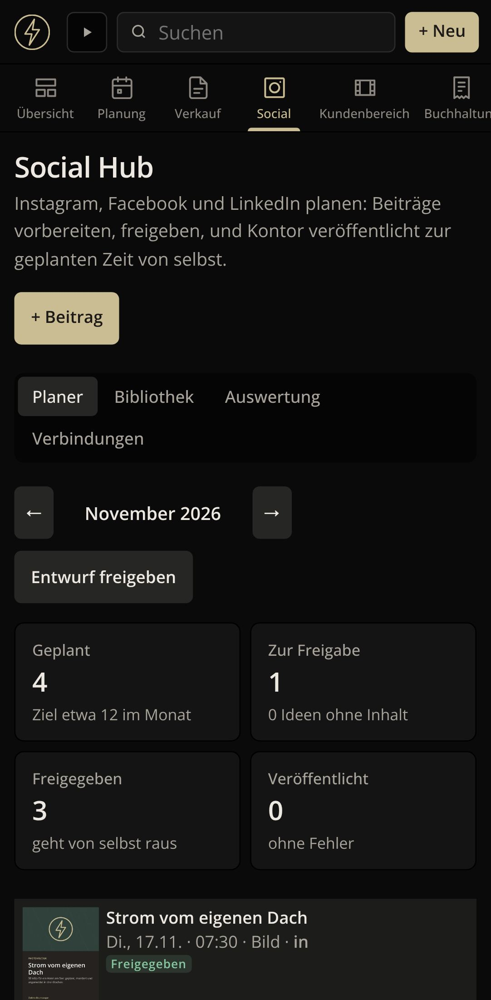